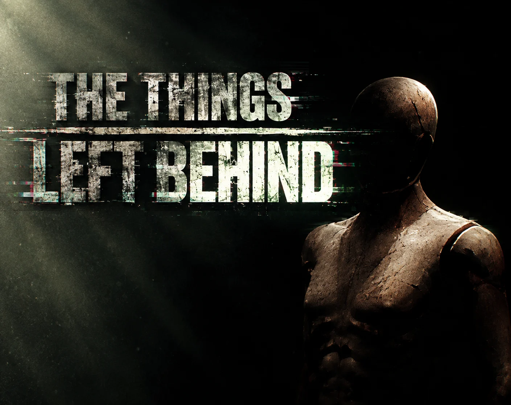

Subject A
Controlled:
Takeaway:
WIP
Can a game create sustained psychological tension by controlling what the player knows, sees and expects, without requiring the threat to directly attack or chase them?
The prototype investigates whether players will begin changing their behaviour when an environment becomes subtly unreliable, even though no visible creature ever pursues them.
This isn't meant to prove mannequins are scary (but if it did, that's a bonus).
The Things Left Behind is a short psychological horror game built around a single unbreakable rule: . There is no monster to run from and no chase sequence to script. Instead, the horror comes entirely from uncertainty, from the gap between what the player remembers seeing and what they see now.
The player takes on the role of a building inspector sent to document structural damage inside a department store scheduled for demolition. The inspection framing gives every mechanic a diegetic reason to exist: the player is meant to look closely, move room to room, and record what they find. That same behaviour is what the horror system quietly against them.
“A building inspector documents the last days of a condemned department store, and slowly realizes the are her instead.”
The rule is enforced by real camera and player visibility, not scripted timing. A corner, a closing door or any blocking object counts as loss of observation. That reliability is what lets the player discover the rule, test it, and eventually fear it.
Memory → → Doubt
The camera keeps an earlier state of the room. A photograph can contradict the player's memory.
A hidden 0–100 value drives pacing across five stages. The player never sees it. It's a design variable, not a stat.
Events aren't random. The director . If the player has been fixated on one thing, it .
| Time | Phase | Purpose |
|---|---|---|
| 0:00–1:30 | ||
| 1:30–3:00 | ||
| 3:00–5:00 | ||
| 5:00–7:00 | ||
| 7:00–10:00 |
What each game controls, what it withholds, and what I took from it.
Controlled:
Takeaway:
WIPControlled:
Takeaway:
WIPControlled:
Takeaway:
WIPSuccess metric: does the system change behaviour because of uncertainty?
I can design and prototype horror systems that create tension through player interpretation and controlled information, not pursuit or jumpscares.
Full GDD v0.2 Locked